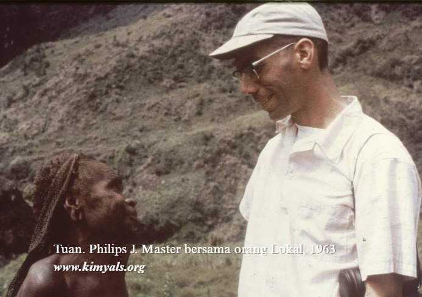

Sejarah Singkat
Suku Kimyal berasal dari dataran tinggi Yahukimo, berkembang melalui adat lisan, dan memiliki ikatan spiritual serta sosial yang kuat dengan lanskap pegunungan mereka.
Masyarakat asli secara turun-temurun mengenal diri mereka sebagai Suku Yalenang, yang berarti "orang-orang yang mendiami ufuk timur". Sebagai bagian dari rumpun antropologis Orang Mek, cerita leluhur dan silsilah perjalanan marga diteruskan dari generasi ke generasi melalui tradisi lisan yang kokoh tanpa tulisan.
Nama "Kimyal" berakar dari istilah "Kemel Yal" (datang melihat) yang disematkan oleh para misionaris. Kontak pertama dengan dunia luar terjadi pada 9 Juli 1963 di Lembah Dogobun (kini Distrik Korupun) saat Tuan Philips J. Master mendarat pertama kali bersama pembantu dari Suku Lani dan Yali.
Masuknya Injil menandai transformasi peradaban baru yang besar. Saat ini, kekristenan menjadi bagian inti kehidupan spiritual Suku Kimyal yang kini bernaung di bawah 7 Klasis GIDI (Gereja Injili Di Indonesia), berjalan selaras dengan pelestarian bahasa ibu Yubu, rumah adat Ae, dan seni tradisi.
